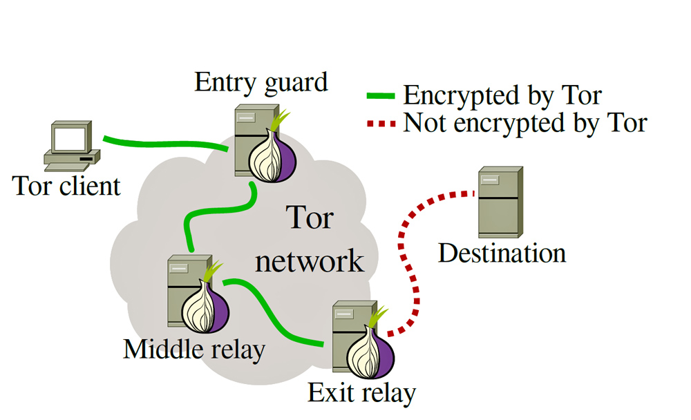

Introduction à Tor 🕵️♂️
Aujourd'hui on va parler de ce qu'est Tor, pourquoi et pour qui est-il utile et comment l'utiliser.
Le réseau Tor
Déjà Tor signifie "The Onion Router", ou "le routeur oignon" en bon français. Il est appelé comme tel parce qu'il décrit très bien son fonctionnement : Pour pouvoir naviguer avec Tor, il faut passer par plusieurs couches de chiffrement, comme les couches d'un oignon. Le but de ce processus est d'anonymiser totalement votre trafic. Voyons voir comment Tor fait pour fonctionner.
Pour fonctionner, Tor a besoin de passer par au moins trois serveurs, appelés "relays". Chaque "relai" va permettre de décrypter une couche du trafic, comme une couche de l'oignon.
Le premier relai est celui dit guard. Ce relai de garde est le seul à connaître votre véritable adresse IP. Cependant, comme le trafic est chiffré, ce relai ne pourra en aucun cas savoir quel est le trafic émis par son client.
Le second relai est celui dit middle. Il peut y avoir un ou plusieurs relais du milieu selon les paramètres choisis par l'utilisateur. Ces relais ne connaissent pas la véritable adresse IP du client et ne peuvent pas voir le trafic émis.
Le dernier relai est celui dit exit. Il s'agit du seul et unique relai qui peut voir tout le trafic du client, mais qui ne pourra pas connaître l'adresse IP du client. Il est aussi le plus sensible à mettre en place, mais nous parleront de ça dans un futur article.
Pour savoir par quels relais le trafic va passer, le client va les élire au hasard en se basant sur les informations d'une base de données répertoriant tout les relais existants. Cette élection peut se reproduire soit à intervalle régulière, soit après chaque flux qui passe par Tor, encore une fois selon les paramètres du client.
Il faut savoir que ce réseau Tor est communautaire : n'importe qui peut décider de créer un relai chez lui ou dans un datacenter, quand il veut et (presque) où il veut. C'est ce qui en fait sa force : plus il y a de relais, moins il est possible qu'une seule organisation contrôle tous les relais et plus Tor permet d'être anonyme.
Pourquoi utiliser Tor ?
Comme nous l'avons vu précédemment, Tor permet d'anonymiser votre trafic. Attention, il ne s'agit pas d'une solution magique pour autant : Tor ne fait "que" dissocier votre adresse IP (et donc potentiellement votre identité personnelle) de votre trafic. Si votre trafic contient des informations sensibles sur votre identité, Tor ne pourra rien y faire.
Je tiens d'ailleurs à faire une petite piqûre de rappel concernant l'utilisation des VPN : une seule entreprise contrôle tous les serveurs VPN auxquels vous vous connectez. Ils peuvent donc naturellement associer pleins de choses : votre adresse IP, la clé d'accès à leurs services qui dépend probablement de votre identité et votre trafic. Le trafic n'est chiffré que entre le client et le serveur VPN, donc certes un espion sur votre réseau ou sur le réseau de votre opérateur ne pourra pas voir votre trafic, mais un espion sur le réseau de l'opérateur de l'entreprise fournissant le VPN peut (Disclaimer : une bonne majorité du trafic que vous utilisez est déjà chiffré entre vous et le service sans utiliser de VPN, grâce aux technologies TLS/SSL comme HTTPS. Mais j'y reviendrais en détail dans un autre article).
Certaines personnes dans le monde ont besoin, notamment pour des raisons politiques, d'être totalement anonymes sur Internet. Que ce soient des lanceurs d'alertes, des réfugiés politiques ou des militaires, Tor leur permet d'être assurés que leur identité ne sera pas divulguée. D'autres personnes (et probablement la majorité des utilisateurs) utilisent Tor car ils ne veulent pas divulguer leur vie privée à des entreprises ayant un quasi-monopole sur Internet. Enfin, quelques personnes utilisent Tor à des fins illégales et c'est évidemment ceux-là qui sont mis en avant par les médias aujourd'hui, pour discréditer l'utilisation du réseau Tor et installer la peur derrière ce mot qu'est "Dark Web".
Alors je ne peux que vous encourager à utiliser ce fabuleux réseau et je vais vous expliquer comment faire pour l'utiliser. Mais juste avant, je veux juste vous prévenir sur la plus grande faiblesse de Tor et probablement la raison pour laquelle vous ne l'utiliserez pas : Le réseau Tor n'est pas du tout performant. En effet, il y a au moins 3 serveurs à passer, qui doivent chacun enlever une couche de chiffrement. Cela peut prendre quelques millisecondes à plusieurs centaines de millisecondes si le relai n'a pas une très bonne puissance. En plus, il y a la latence et le débit limité par les équipements des opérateurs des différents relais. En général, le débit n'excèdera pas les 5 Mbps et la latence pourra être de plusieurs centaines de millisecondes. Cependant, sachez que vous aurez plus de chances de passer par des relais performants lors de l'élection des relais.
Comment utiliser Tor ?
La plupart du temps, Tor est utilisé à travers le Tor Browser, un navigateur basé sur Firefox permettant la connexion à Tor et possédant des extensions visant à limiter les risques (comme NoScript, une extension permettant de bloquer l'utilisation de JavaScript). L'installation se fait facilement selon votre plateforme et est très explicite. Pour une utilisation "normale" (sans passer par des ponts, dont on parlera dans un autre article aussi), aucune configuration complexe n'est nécessaire. A savoir que ce navigateur est aussi disponible sous Android.
Pour faire passer tout le trafic sur le réseau Tor, plusieurs options s'offrent à vous :
- Sous Android, vous pouvez utiliser Orbot qui est configuré comme un "VPN" pour le téléphone et qui fait passer tout le trafic du tunnel VPN dans Tor.
- Pour votre PC, je vous conseille d'utiliser Tails, une distribution Linux aux fonctionnalités de plus en plus impressionnantes ! Elle se lance en "live" (c'est-à-dire qu'aucune donnée n'est sauvegardé sur le disque, tout est chargé dans la RAM), construit un circuit Tor à son lancement et possède plusieurs outils usuels. J'y reviendrais (encore une fois) dans un article car cette distribution est franchement bien plus impressionnante que ce que je viens de vous décrire !
- Si vous ne voulez pas utiliser Tails, alors la solution la plus "simple" est d'utiliser un proxy SOCKS5 ou HTTP configuré pour Tor. J'en parlerais évidemment en détail dans un futur article.
Voilà pour cette introduction à Tor, évidemment c'est loin d'être complet mais Tor est un sujet tellement complexe qu'un seul article ne suffira pas. Je vous invite à essayer Tor par vous-même et, si vous le pouvez, à soutenir le projet Tor soit en leur faisant une donation, soit en lançant un relai chez vous.